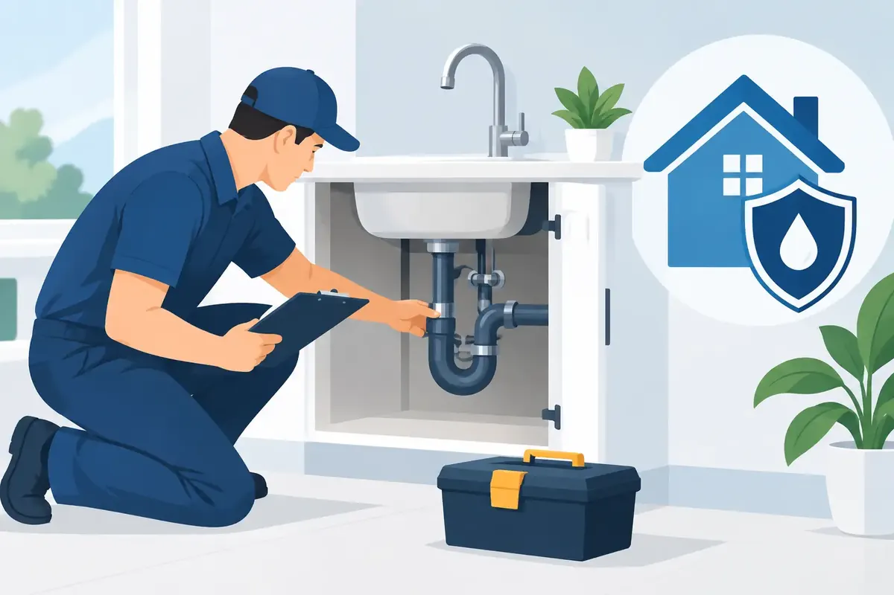

A slow leak beneath a kitchen sink can damage cabinet floors for months before anyone sees it. A water heater can appear to be working normally while corrosion, sediment, or a failing safety component is developing inside. Plumbing inspections give homeowners and property managers a clear picture of these hidden risks before they become an after-hours emergency.
For families and businesses across Middle Tennessee, an inspection is not about finding reasons to replace everything. It is about getting honest answers, identifying priorities, and protecting the property you have worked hard to maintain. The right plumber should explain what is urgent, what can be planned for later, and what simply needs to be watched.
What Is Included in a Plumbing Inspection?
A professional plumbing inspection looks at the systems that deliver clean water, remove wastewater, produce hot water, and protect the building from leaks. The exact scope depends on the age of the property, recent concerns, and whether the visit is residential or commercial.
A thorough inspection commonly includes visible water supply lines, shutoff valves, fixtures, toilets, drains, water pressure, water-heater connections, and exposed sewer or drain piping. Your plumber may also check for signs of corrosion, moisture, improper installation, slow drainage, water discoloration, unusual pressure changes, and active or past leaks.
When a drain or sewer concern is suspected, a camera inspection can provide a more complete answer than guesswork. It can reveal root intrusion, buildup, cracked piping, belly sections, or obstructions farther down the line. Not every property needs a camera inspection every year, but it is often a wise step for recurring backups, older sewer lines, or a home purchase.
Water quality may also deserve attention. Hard water, staining, unpleasant taste, scale buildup, and concerns about filtration can point to a need for testing or a closer look at water softeners, reverse osmosis equipment, whole-house filtration, UV treatment, or descaling options.
When Should You Schedule Plumbing Inspections?
For most homes, an annual plumbing inspection is a practical baseline. It allows small concerns to be addressed during a planned visit rather than after water has reached the floor, wall, or ceiling. Homes with older piping, mature trees near sewer lines, well water, hard water, or aging water heaters may benefit from more frequent attention.
There are also moments when an inspection makes especially good sense. Schedule one before buying a home, after moving into an older property, before a major kitchen or bathroom remodel, or before leaving a house vacant for an extended period. Landlords can use inspections between tenants to catch toilet leaks, worn supply lines, drain problems, and fixture damage before they affect the next resident.
Commercial properties should set an inspection schedule that matches their use. A restaurant, office building, church, retail space, or multi-unit property has different demands than a single-family home. High-traffic restrooms, commercial water heaters, backflow devices, and shared drain lines can create costly interruptions when maintenance is delayed.
The Problems an Inspection Can Catch Early
Some plumbing failures happen without warning, but many give early clues. A trained technician knows where to look and what those clues mean. Catching them early can reduce water damage, preserve equipment life, and make repair decisions less stressful.
Common findings include:
- Dripping or corroded supply lines beneath sinks, toilets, and appliances
- Worn shutoff valves that may not work when a leak occurs
- Water-heater sediment, corrosion, temperature concerns, or failing relief valves
- Slow drains caused by buildup, partial blockages, or damaged piping
- Toilet leaks that waste water without making an obvious mess
- High water pressure that puts added strain on fixtures and appliances
- Sewer-line concerns, including root intrusion and recurring backup risks
- Backflow issues that may affect commercial compliance and water safety
A good inspection should separate a small repair from a serious risk. For example, a minor faucet drip may be an easy repair, while a corroded water-heater connection or a deteriorating main shutoff valve deserves faster action. Context matters. The goal is not to create alarm, but to give you the information needed to make a sound decision.
Why Water Heaters Deserve Special Attention
Water heaters are one of the most overlooked parts of a plumbing system until there is no hot water or a tank begins leaking. During an inspection, a plumber can assess the unit's age, visible condition, connections, venting where applicable, drain pan, pressure-relief valve, and signs of sediment or corrosion.
Tank-style units, tankless water heaters, and heat-pump or hybrid models each have different maintenance needs. A tank may need flushing when sediment is affecting efficiency. A tankless system may need descaling, especially where mineral content is high. A heat-pump water heater needs adequate space and proper condensate drainage.
Replacement is not always the immediate answer. If a unit is safe, functioning well, and reasonably maintained, service may extend its useful life. But if a water heater is nearing the end of its expected service life, planning ahead gives you time to compare options instead of choosing under pressure after a failure.
What Happens During a Professional Visit?
A respectful inspection should feel organized and straightforward. The technician begins by listening to your concerns - perhaps a recurring clog, high water bill, damp spot, low pressure, or changes in water quality. Those details help guide the inspection and prevent important issues from being overlooked.
Next comes a visual review and functional testing of the relevant plumbing components. Depending on the property and symptoms, that may involve checking fixtures, running water, evaluating drainage, looking at exposed piping, testing pressure, or recommending a camera inspection. The plumber should protect the work area, communicate clearly, and avoid leaving you with confusing technical language.
Afterward, you should receive a clear explanation of the findings. Ask which repairs are urgent, which items are preventive, what could happen if work is postponed, and whether a repair or replacement offers better value. Upfront pricing matters because it gives you the ability to decide without surprises.
How to Prepare for an Inspection
You do not need to know plumbing terminology to prepare. Make a short note of concerns you have noticed, including when they occur and where. Mention any past leaks, backups, water-heater repairs, unusual noises, or recent increases in the water bill.
If possible, clear reasonable access around the water heater, under sinks, and near the main water shutoff. For commercial properties, let the technician know about building access rules, business hours, restroom locations, equipment rooms, and any prior backflow or sewer documentation. A little preparation helps the visit move efficiently.
Inspection Is Prevention, Not a Sales Pitch
Some property owners avoid inspections because they worry that every visit will end with a long list of expensive recommendations. That is understandable. Plumbing systems do wear out, and an honest technician may identify work that needs to be planned. Still, a trustworthy inspection gives you choices rather than pressure.
Angle Stop Plumbing approaches plumbing concerns with the same respect we would want for our own families: clear communication, courteous service, and practical recommendations based on the condition of the system. With 31 years of plumbing experience, our team helps Middle Tennessee homeowners and commercial property operators understand what they are seeing and what to do next.
Whether you are protecting a family home, preparing a rental property, or keeping a business operating without disruption, do not wait for a puddle to tell you something is wrong. A timely inspection can turn an uncertain plumbing concern into a manageable plan - and help keep your property, your budget, and your peace of mind better protected.